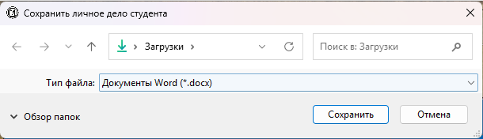
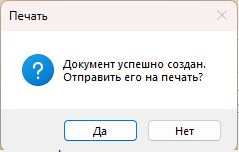
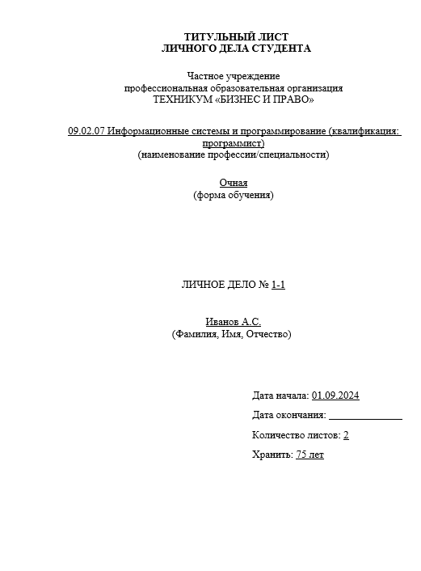
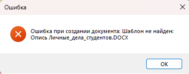

Функция «Печать личного дела студента» (меню «Печати → Получить данные по выбранному студенту») позволяет сформировать и распечатать личное дело студента в формате документа Microsoft Word.

Рис. 1. Пункт меню для печати личного дела выбранного студента
Условия использования
Функция доступна только в следующих разделах:
— Студенты (раздел 2.2.1)
— Персональные файлы (раздел 2.2.2)
— Удалённые персональные файлы (раздел 2.2.3)
Порядок действий
1. Перейдите в один из разделов со студентами (например, «Студенты»).
2. Выделите строку с нужным студентом (один клик по любой ячейке).
3. В главном меню выберите «Печати → Получить данные по выбранному студенту».

Рис. 2. Диалог выбора места сохранения файла (.docx)
4. В появившемся диалоге выберите папку и имя файла (по умолчанию предлагается имя вида «Личное_дело_Иванов_ИИ_123.docx»).

Рис. 3. Запрос на отправку документа на печать
5. После создания файла появится запрос: «Документ успешно создан. Отправить его на печать?»
— Нажмите «Да» — документ будет отправлен на принтер по умолчанию.
— Нажмите «Нет» — файл будет только сохранён в выбранном месте.
Шаблон документа

Рис. 4. Пример сформированного личного дела (заполненный шаблон)
Программа использует файл шаблона «Опись Личные_дела_студентов.DOCX», который должен находиться в папке с программой.
В шаблоне присутствуют специальные метки-заполнители вида {Specialty}, {Name}, {StartDate} и т.д. Программа автоматически заменяет их реальными данными из базы:
| Метка в шаблоне | Что заменяется |
|---|---|
| {Specialty} | Специализация группы |
| {FormOfStudy} | Форма обучения (всегда «Очная») |
| {FileNumber} | Номер дела (ID студента + ID личного дела) |
| {Name} | ФИО студента |
| {StartDate} | Год поступления |
| {EndDate} | Год отчисления (если есть) |
| {SheetCount} | Количество листов (общее число документов студента) |
| {StorageYears} | Срок хранения (всегда «75») |
Возможные ошибки

Рис. 5. Сообщение об ошибке, если файл шаблона не найден
Если при попытке печати появляется сообщение «Шаблон не найден», убедитесь, что:
— Файл «Опись Личные_дела_студентов.DOCX» присутствует в папке с программой.
— Имя файла соответствует ожидаемому (включая регистр букв).